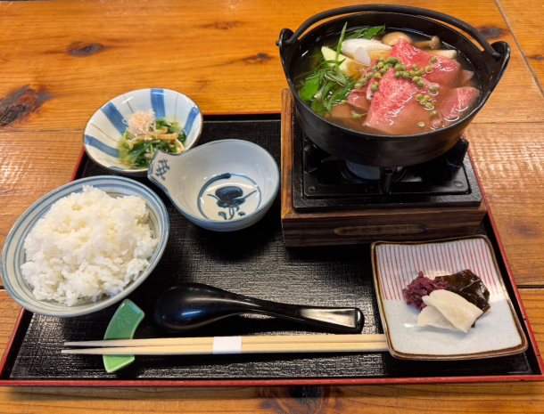
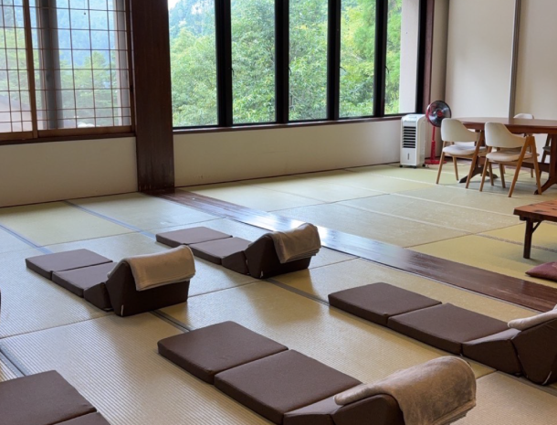
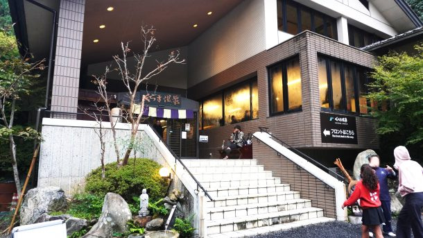
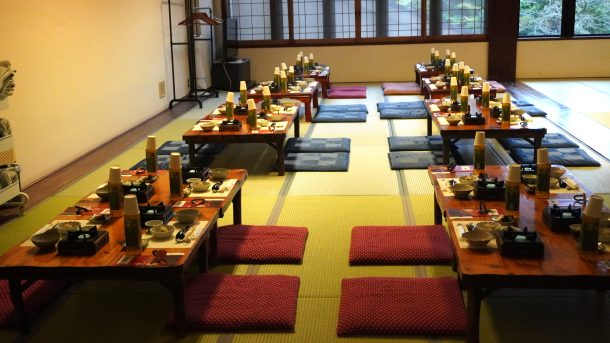
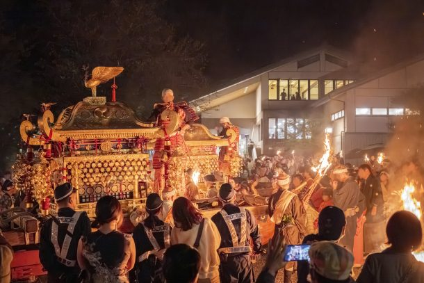
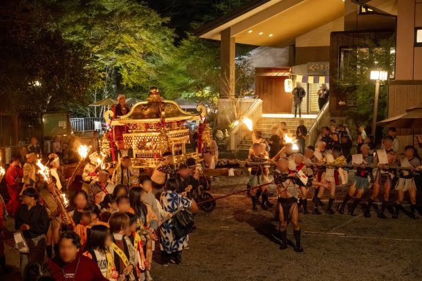

最新の情報は 公式サイトのツアーページ をご覧ください。
間近で体感する迫力！くらま温泉×鞍馬の火祭 観覧ツアー ～帰り時間を気にせず楽しむ特別な一夜～
※大人・子ども同額
※くらま温泉でのご夕食・夜食、施設利用料、入浴料、入湯税、往復送迎が含まれております
※60名限定（先着順）
| お申込み状況（最少催行人数4名／最大60名） |
| 催行確定 ★満席（キャンセル待ち可能） |
※最新のお申込み状況はお問い合わせください
本ツアーの募集は終了いたしました
＜お問合せフォームはこちら▶＞
＜MKトラベルTOPはこちら▶＞
＜おすすめツアー一覧はこちら▶＞
京都・洛北の秋を代表する伝統行事「鞍馬の火祭」。
山里に炎が揺らめき、熱気と幻想的な空気に包まれる年に一度の特別な夜へご案内します。
本ツアーは、京都市内からの往復送迎に加え、くらま温泉でのご夕食・温泉入浴付き。
鞍馬の火祭は自由行動にてご鑑賞いただきます。
そして、このツアー最大の魅力は、くらま温泉を“休憩所”として利用できること。
混雑する鞍馬の火祭では、休憩場所の確保や荷物の持ち歩きが大きな負担になることもありますが、本ツアーでは、くらま温泉を拠点とし、休憩や温泉を利用しながらゆったりとお過ごしいただけます。
また、貴重品はロッカーへ預けることができ、火祭鑑賞に必要な手荷物だけで身軽に散策できるのも嬉しいポイント。
ご夕食後は、早めに火祭の熱気を感じに出かけるのも、まずは温泉でゆったり癒されてから夜の鞍馬へ向かうのも自由。
皆さま思い思いに、鞍馬の特別な夜をお楽しみ下さい。
また、くらま温泉内は祭礼関係者や施設利用者のみが入ることのできる特別な空間。
火祭の終盤には、二基の神輿や松明がくらま温泉敷地内へ。
目の前を通る神輿や揺らめく炎を、ゆったり間近で見られるのも本ツアーならではの魅力！！
束の間の休息をとる祭礼関係者の姿、迫力ある松明、そして目の前に並ぶ神輿。
一般観覧とはひと味違う、特別感のある鞍馬の火祭をご体感ください。
さらに、本ツアーでは帰り時間を気にせず、火祭の最終盤までゆったり見学可能。
深夜は京都市内ホテルまで送迎いたしますので、夜遅い時間でも安心してご参加いただけます。
| 💬昨年ご参加のお客様の声 |
| ・「鞍馬の火祭は想像以上に迫力があった」（60代） ・「くらま温泉利用者のみ特別に入れるエリアで鞍馬の火祭を見られてよかった」（50代） ・「くらま温泉に拠点があったので、安心して楽しめた」（60代） ・「ゆっくり過ごせて温泉にも入れていつでも休めるので、本当に良かった」（40代） ・「帰りの時間を心配しなくていいから、鞍馬の火祭を最後まで見られたらよかった」（30代） |
| 💡 このツアーだけのうれしいポイント |
| 🧳 貴重品の預け場所もバッチリ！ 火祭見学中は内風呂ロッカーに手荷物＆貴重品を保管OKで安心◎ |
| 🛁 温泉でぽかぽか癒し時間♨ 露天風呂は21時まで、内風呂は24時まで利用可能！ 寒くなる夜もぽかぽか＆リフレッシュできちゃう |
| 🕖 くらま温泉にたっぷり約7時間ステイ 火祭も温泉も、どちらもゆっくり楽しめる贅沢プラン |
| 🧼 タオル付き入浴＆広々休憩スペース完備！ 宴会場やレストランでのんびり休憩OK 歩き疲れたらふらっと戻ってひと休みも◎ |
| 🌙 今年はうれしい「夜食付き」！ 火祭をたっぷり楽しみつつ、ほっとひと息。夜遅くまで楽しむツアーだからこそ、うれしい夜食をご用意しました。 |
行程
| 時間 | 場所 |
| 16:00 | 京都駅八条口MKタクシーのりば（集合） ※16:15出発予定 |
| 17:30頃 | くらま温泉＜山椒鍋御膳のご夕食／約60分＞ |
| 18:30頃 | 鞍馬の火祭 （食後、順次自由行動スタート） ※くらま温泉を拠点に、火祭鑑賞や温泉入浴など自由にお過ごしください ※20:30～21:00頃 山門前の石段へ大松明が終結～ ※21:50頃 火祭を町中で自由見学 ※夜食は19:00～23:00の間にお召し上がりいただけます |
| 22:20～ 22:50頃 | くらま温泉敷地内 ＜お神輿の巡行を見学＞ |
| 22:50～ 24:00 | 町中を自由見学もしくは 「美肌の湯」として親しまれるくらま温泉にご入浴 |
| 24:30頃 | くらま温泉（出発） |
| 25:30～ 26:00 | 京都市内各所へお送り（下記参照） |
※山道を通る、う回路を走行する場合もございます。車酔いしやすい方は酔い止めのご準備をおすすめします。
※鞍馬の火祭は地域の伝統行事のため、当日の祭礼進行や混雑状況により、行程や帰着時間が変更となる場合がございます。祭りならではの臨場感とともに、時間に余裕をもってお楽しみください。
| 【服装・持ち物について】 | |
| 懐中電灯（道が暗いため） 雨具（天候によって） 歩きやすい靴（山道や坂道あり） 酔い止め（酔いやすい方） 動きやすい服装 防寒着（夜は冷え込みます） | |
| ※離れていても火の粉が降ってくる場合がございます。衣服や靴が焦げたり、穴が開く可能性がございますので、ご参加の際はナイロン等の熱に弱い素材の着用はお控えください。 |
| 【京都市内お送り場所（予定）】以下の場所からお選びいただけます |
| 京都駅 [八条口 / 烏丸口] 京阪 七条駅 / 清水五条駅 / 祇園四条駅 地下鉄 五条駅付近 四条河原町 / 四条烏丸 / 四条大宮 二条城付近 リーガロイヤルホテル京都 京都東急ホテル ホテルオークラ京都 |
※その他ご希望がある場合はご相談ください。
くらま温泉
-




鞍馬の火祭
写真提供：井上 裕康さん（hamnin1027ie）


くらま温泉の敷地内から


火祭の様子①


火祭の様子②


火祭の様子③

★ツアースタッフによるレポート記事公開中★
【MKトラベルLINE公式アカウント】
MKトラベルの新規ツアー情報をLINEでお届けいたします

【各SNSでも京都の情報やツアー情報をお届けしています】


旅行条件
| ツアー番号 | T189AA |
| 出発地 | 京都市 |
| 添乗員／ガイド | なし（乗務員がその業務を代行いたします）／なし |
| 食事 | 夕食1回+夜食付き |
| 最少催行人数 | 4名様（最大60名） |
お申込みについてのご注意
※最少催行人数は4名様です。最少催行人員に満たない場合は、旅行の実施を取りやめることがあります。出発の7日前にその旨をご連絡し、お客様から当社がお預かりしている旅行費用の全額をお返しいたします。
※旅行条件・旅行代金は、2026年5月1日現在を基準としています。
※行程および帰着時間は交通事情などにより変更になる場合があります。
※鞍馬の火祭は雨天決行となります。雨具をご持参のうえ、防寒対策をしてご参加ください。（傘の使用が難しい場面もあるため、レインコート等がおすすめです）
※お申込みの前に弊社の募集型企画旅行規約をご確認ください。
よくある質問
Q.火祭を楽しめるツアーは他にもありますか？
A.はい。本ツアーのほかに、火祭をお楽しみいただいたあと、くらま温泉に宿泊する「くらま温泉で迎える 鞍馬の火祭 特別な一夜」、昼に鞍馬を散策後、火祭をお楽しみいただく「昼の鞍馬散策と夜の火祭へ」をご用意しています。
Q.キャンセル待ちは可能ですか？
はい。キャンセル待ち中の方限定のツアーもございます。詳細はこちら
本ツアーの募集は終了いたしました
＜お問合せフォームはこちら▶＞
＜MKトラベルTOPはこちら▶＞
＜おすすめツアー一覧はこちら▶＞
・TACPOカード
・クレジットカード決済
・コンビニ決済
お支払方法詳細はこちら
お客様のご都合でご予約をキャンセルされる場合は、すみやかに下記お問合せ先までご連絡ください。
キャンセル料
11日目に当たる日以前
無料
10日目に当たる日以前
20%
7日目に当たる日以前
30%
旅行開始日の前日
40%
旅行開始日の当日
50%
旅行開始後又は無連絡
100%